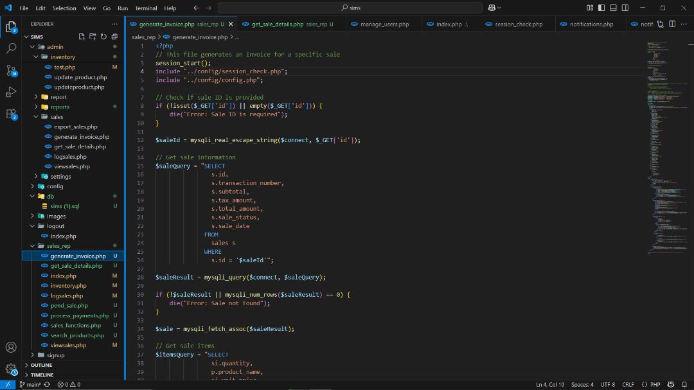
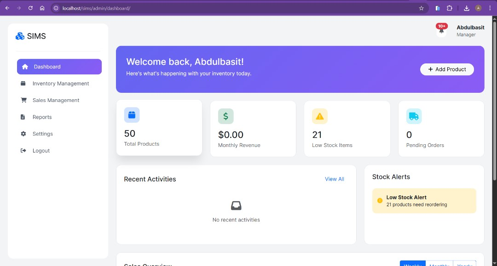
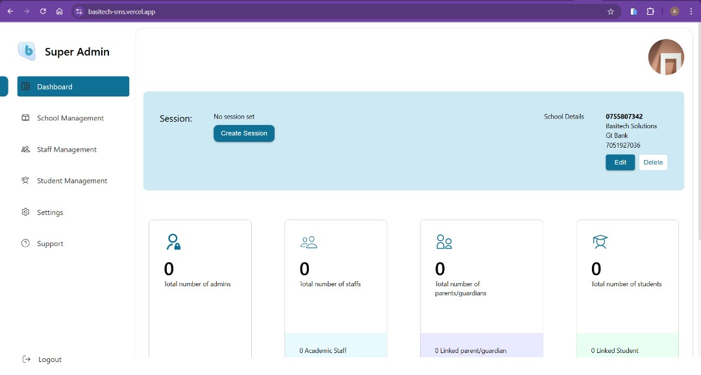
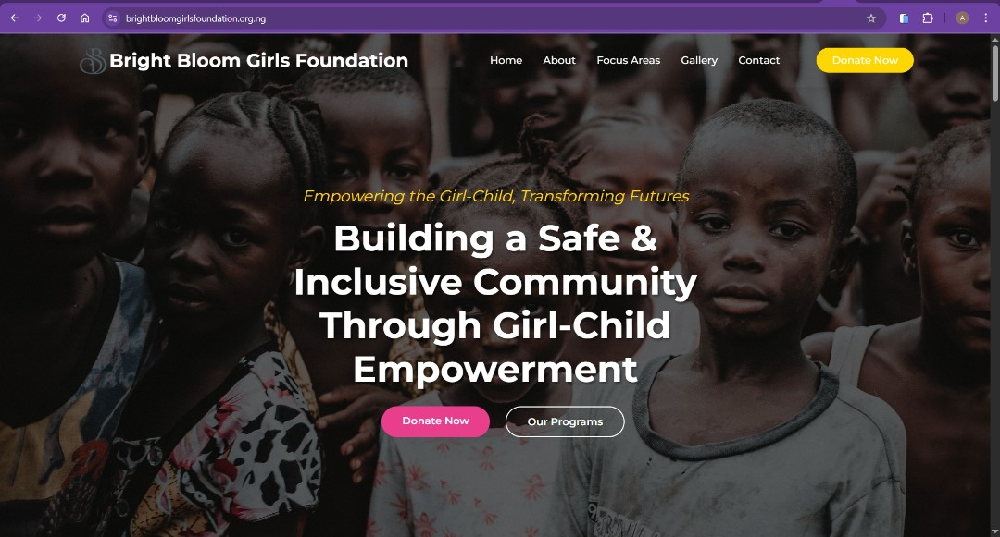
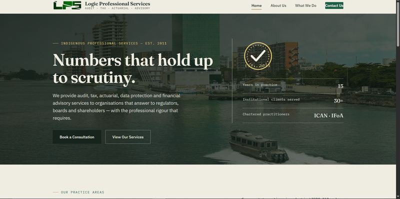
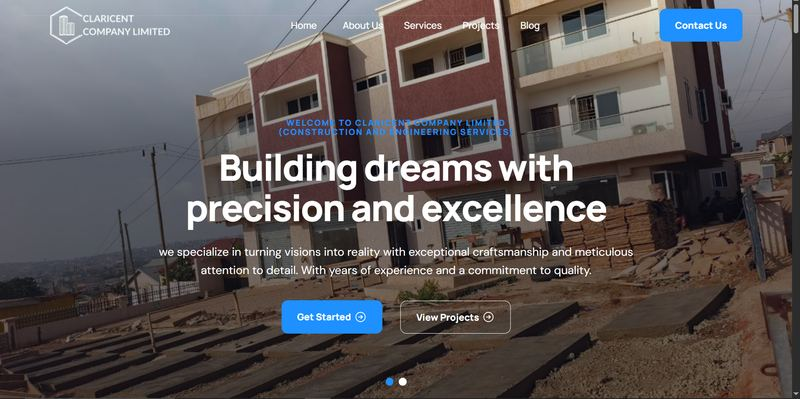
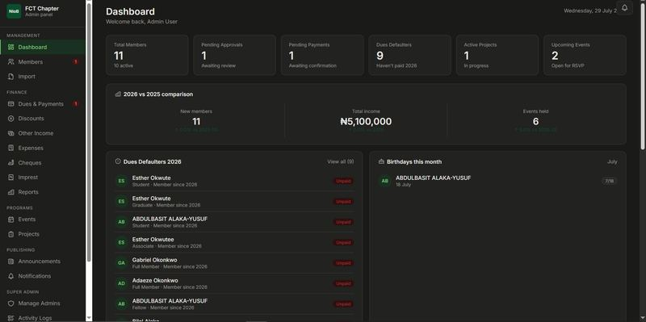

I'm a software engineer with a focus on creating interactive, user-friendly websites and web applications. I turn ideas into reality.

I'm Abdulbasit, aka The Tech Guy — a 24-year-old Nigerian software developer and Computer Science graduate of Catholic University of Ghana, with hands-on experience in software development, system architecture design, and database management, and a proven ability to design and implement functional applications. Eager to contribute to and grow within dynamic teams. Adaptable and solution-oriented, thrives in collaborative environments and is always ready to tackle new challenges. Passionate about leveraging technology in areas such as Artificial Intelligence, IoT, and cybersecurity to solve real-world problems and drive innovation.
I co-founded Basitech Solutions, an IT startup specializing in custom software across different industries — currently on hold while I complete my NYSC. I'm presently serving as a Corps member with the Nigerian Institute of Building (NIoB), FCT Chapter, where I'm building a full member management portal for the chapter.
Hire Me Download CVBuilding responsive, interactive interfaces with HTML5, CSS3, JavaScript, Bootstrap, jQuery, and Ajax.
Server-side logic and APIs with PHP, Laravel, Python, Django, Java, and C++/C#/.Net.
Designing and optimizing relational schemas, queries, and data models with MySQL.
Planning scalable application structure end-to-end, from database design to deployment.
Collaborative development workflows using Git, GitHub, and Visual Studio Code.
Building with data protection and secure authentication practices in mind, informed by ongoing interest in cybersecurity.

A functional Inventory Management System for Pharmacy built as my final year project. I'm still working on adding more functionality even after my defense.
Demo available on request
View Project
A school management system with innovative features, built for schools to drive digital transformation.
Demo available on request
View Project
A fully responsive, user-friendly website built for an NGO, Bright Bloom Girls Foundation.
View Project
A full redesign and rebuild of the website for Logic Professional Services (LPS), an indigenous audit, tax, actuarial, and financial advisory firm serving institutional clients such as CBN, Union Bank, Seplat, and Schneider Electric. Replaced a WordPress/Elementor site with a hand-built static site.
View Project
A standard corporate website for Claricent Company Limited, a construction and engineering services company based in Ghana.
View Project
A full-stack web application built for the FCT Chapter of the National Institute of Building. Handles member registration and approval, annual dues collection, event management, project tracking, and financial management (expenses, cheques, imprest accounting), with separate admin and member portals.
Demo available on request
Lagos, Nigeria. Sunyani, Ghana